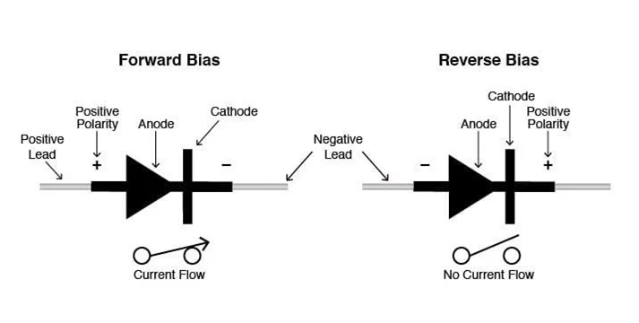

Circuitos Eléctricos
Peregrina Chavarría José Elías - Briseño Rodríguez Ivana Naomi
Diodo
¿Qué es?
Un diodo es un dispositivo semiconductor que actúa esencialmente como un **interruptor unidireccional** para la corriente. Permite que la corriente fluya en una dirección, pero no permite a la corriente fluir en la dirección opuesta.

Los diodos también se conocen como **rectificadores** porque cambian corriente alterna (CA) a corriente continua (CC) pulsante. Los diodos tienen una polaridad determinada por un **ánodo** (terminal positivo) y un **cátodo** (terminal negativo). La mayoría de los diodos permiten que la corriente fluya solo cuando se aplica tensión al ánodo positivo.
Cuando un diodo permite un flujo de corriente, tiene **polarización directa**. Cuando un diodo tiene polarización inversa, actúa como un aislante y no permite que fluya la corriente.
Tipos de diodo
Todos los tipos de diodos tienen la función básica de conducción unidireccional, pero difieren en su diseño, estructura y características. A continuación, se presentan varios tipos:
| Tipo de diodo | Descripción | CARACTERÍSTICAS PRINCIPALES | Aplicaciones |
|---|---|---|---|
| Diodo rectificador | Tipo básico de diodo utilizado para la conversión de potencia. | Convierte CA en CC; maneja alta corriente y voltaje. | Fuentes de alimentación, adaptadores, cargadores |
| Diodo de pequeña señal | Diseñado para pequeñas corrientes y voltajes. | Conmutación de alta velocidad, baja capacitancia. | Circuitos de RF, conmutación lógica |
| Diodo Zener | Diodo especial trabajando en ruptura inversa. | Mantiene constante la tensión Zener; regulación de tensión. | Estabilización de potencia, protección contra sobretensiones |
| Diodo de Schottky | Diodo de unión metal-semiconductor. | Baja caída de tensión directa (0.2–0.4 V), conmutación muy rápida. | Fuentes de alimentación, circuitos de RF, paneles solares |
| Diodo emisor de luz (LED) | Emite luz cuando está polarizado hacia adelante. | Eficiencia energética, larga vida útil, opciones multicolor. | Pantallas, iluminación, indicadores, automoción |
| Fotodiodo | Convierte la luz en corriente eléctrica. | Alta sensibilidad, respuesta rápida, operación con polarización inversa. | Células solares, comunicación óptica, sensores. |
| Diodo láser | Similar al LED pero produce luz láser. | Emite un haz coherente y monocromático. | Fibra óptica, lectores de códigos de barras, unidades de DVD/CD |
| Diodo de avalancha | Opera en la región de ruptura de avalanchas. | Soporta altos voltajes, absorbe sobretensiones. | Protección contra sobretensiones, circuitos de alto voltaje |
| Diodo TVS | Dispositivo de supresión de tensión transitoria. | Respuesta muy rápida; sujeta picos de tensión. | Protección ESD, líneas de comunicación |
| Diodo PIN | Estructura de capa P, capa intrínseca, capa N. | Resistencia variable a alta frecuencia. | Interruptores, atenuadores y fotodetectores de RF. |
| Diodo varactor (varicap) | Actúa como un condensador controlado por voltaje. | La capacitancia varía con el voltaje inverso. | Sintonización de RF, circuitos PLL, VCO |
| Diodo túnel (Esaki) | Diodo de unión PN fuertemente dopado. | Efecto túnel, resistencia negativa. | Osciladores de microondas, amplificadores |
| Diodo inverso | Variante de diodo túnel para pequeñas señales. | Optimizado para señales de RF de bajo voltaje. | Detección de RF, rectificación de señales |
| Diodo de recuperación escalonada (SRD) | Diodo “snap-off” para pulsos agudos. | Genera señales de tiempo de subida rápido. | Multiplicadores de frecuencia, sistemas de radar |
| Diodo Gunn | Fabricado en material tipo N, sin unión PN. | Utiliza el efecto Gunn para generar microondas. | Radar, osciladores de microondas |
| Diodo dopado con oro | Diodo PN dopado con átomos de oro. | Corta vida útil del portador, conmutación muy rápida. | Circuitos de detección de alta velocidad |
| Diodo de corriente constante | Dispositivo semiconductor limitador de corriente. | Mantiene un flujo de corriente constante. | Controladores LED, cargadores de batería |
| Peltier / Diodo térmico | Mueve calor en lugar de corriente. | Basado en el efecto Peltier; transferencia de calor direccional. | Refrigeración de la CPU, gestión térmica |
| Diodo de vacío | Los primeros diodos se construían en tubos de vacío. | Emisión termoiónica, capacidad de alto voltaje. | Radios antiguas, fuentes de alimentación antiguas |
Aplicaciones de diferentes tipos de diodos
Cada tipo de diodo cumple una función única en diversos escenarios. La siguiente tabla resume las principales categorías de aplicación y los tipos de diodos correspondientes.
| Categoría de Aplicación | Aplicaciones | Tipos comunes de diodos |
|---|---|---|
| Potencia y rectificación | Conversión de CA a CC en fuentes de alimentación, Rectificadores de puente | Diodos rectificadores |
| Regulación y fijación de voltaje | Regulación de voltaje, Sobretensiones de sujeción | Diodos Zener, diodos TVS |
| Procesamiento de señales | Circuitos de RF, Generación de pulsos agudos | Diodos de túnel, diodos PIN, diodos de recuperación escalonada (SRD) |
| Optoelectrónica | Iluminación y displays, Sistemas de comunicación óptica | LED, fotodiodos, diodos láser |
| RF y microondas | Osciladores de microondas, Sintonización de frecuencia | Diodos Gunn, diodos varactores |
| Circuitos de protección | Protección de carga inductiva, Supresión de ESD | Diodos flyback, diodos TVS |
| Aplicaciones térmicas y heredadas | Procesadores de refrigeración, Electrónica temprana | Diodos Peltier, diodos de vacío |
Parte física
Los diodos se construyen a partir de un material **semiconductor** (como el silicio). Al añadirle pequeñas cantidades de otros elementos (dopaje), se crean zonas donde hay muchos electrones libres (llamadas **zonas N**) y otras donde faltan muchos electrones (**zonas P**). Un diodo está formado por una zona P (**el ánodo**) unida a una zona N (**el cátodo**). [Image of a PN junction diode structure]
Existen unos diodos especiales que emiten luz cuando pasa la corriente denominados **diodos LED**. Cuando un diodo LED está en estado de conducción, el voltaje entre sus extremos es cercano a los $2 V$. Generalmente, la intensidad de la corriente adecuada para un LED suele estar comprendida entre $5$ y $20 \text{ mA}$.
FÓRMULA (Resistencia limitadora para LED)
Supongamos que disponemos de una pila de 4.5 V y queremos hacer pasar por el LED una corriente de 10 mA (0.01 A). Para calcular la resistencia limitadora (R) aplicamos la Ley de Ohm (R = V / I). El voltaje en la resistencia (VR) será la diferencia entre el voltaje de la pila (Vpila = 4.5 V) y el voltaje en el LED cuando conduce (VLED ≈ 2 V).
En definitiva:

VR = Vpila − VLED = 4.5 V − 2 V = 2.5 V
Cálculo de la Resistencia (R):
R = VR / I = 2.5 V / 0.01 A = 250 Ω